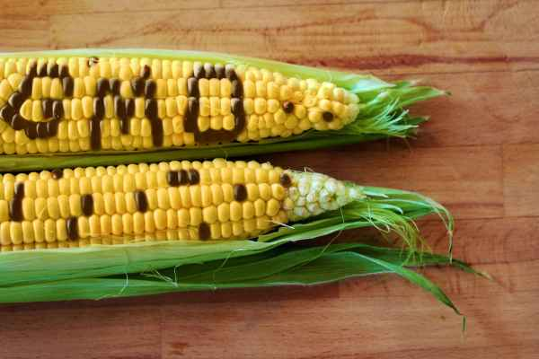

การตัดต่อยีน (GMOs)
พันธุวิศวกรรม (Genetic Engineering) คือ กระบวนการใช้เทคนิคทางชีววิทยาระดับโมเลกุลเพื่อเปลี่ยนแปลงสารพันธุกรรมของสิ่งมีชีวิต โดยอาจเป็นการเพิ่มยีน ลบยีน หรือปรับเปลี่ยนลำดับ DNA เพื่อให้ได้ลักษณะที่ต้องการ พันธุวิศวกรรมเป็นส่วนหนึ่งของเทคโนโลยีชีวภาพสมัยใหม่ สิ่งมีชีวิตดัดแปลงพันธุกรรม
GMOs (Genetically Modified Organisms) หมายถึง สิ่งมีชีวิตที่สารพันธุกรรมถูกเปลี่ยนแปลงด้วยเทคนิคพันธุวิศวกรรม เพื่อให้มีคุณสมบัติเฉพาะตามที่ต้องการ เช่น พืชที่ต้านทานแมลง พืชที่ทนต่อโรค หรือจุลินทรีย์ที่สามารถผลิตสารทางการแพทย์ ตัวอย่างการประยุกต์ใช้ GMOs ได้แก่ การพัฒนาพืชให้ต้านทานแมลง การเพิ่มคุณค่าทางโภชนาการของอาหาร และการใช้จุลินทรีย์ดัดแปลงพันธุกรรมในการผลิตอินซูลินสำหรับผู้ป่วยโรคเบาหวาน กระบวนการพันธุวิศวกรรมโดยทั่วไปเริ่มจากการเลือกยีนที่ต้องการศึกษา จากนั้นเตรียม DNA หรือยีนเป้าหมาย แล้วนำเข้าสู่เซลล์หรือสิ่งมีชีวิตที่ต้องการ หลังจากนั้นจึงตรวจสอบว่ายีนทำงานตามที่ต้องการหรือไม่ และประเมินความปลอดภัยของสิ่งมีชีวิตที่ได้ พันธุวิศวกรรมมีประโยชน์หลายด้าน เช่น ด้านการเกษตรช่วยเพิ่มผลผลิตและปรับปรุงคุณภาพพืช ด้านการแพทย์ช่วยผลิตยาและศึกษาสาเหตุของโรค และด้านอุตสาหกรรมช่วยผลิตเอนไซม์และสารชีวภาพต่าง ๆ อย่างไรก็ตาม
การใช้ GMOs ต้องคำนึงถึงความปลอดภัยต่อสุขภาพของมนุษย์ ผลกระทบต่อสิ่งแวดล้อม ความหลากหลายทางชีวภาพ และจริยธรรม โดยต้องมีการประเมินตามหลักวิทยาศาสตร์และข้อกำหนดที่เกี่ยวข้อง การโคลนนิ่ง (Cloning) คือ กระบวนการสร้างสำเนาทางพันธุกรรมของเซลล์หรือสิ่งมีชีวิตจากต้นแบบ โดยมีเป้าหมายให้สิ่งที่ได้มีสารพันธุกรรมเหมือนหรือใกล้เคียงกับต้นแบบ การโคลนนิ่งไม่ได้หมายความว่าจะเหมือนต้นแบบทุกด้าน 100% เพราะลักษณะของสิ่งมีชีวิตยังได้รับอิทธิพลจากสิ่งแวดล้อมและปัจจัยอื่น ๆ การโคลนนิ่งมีหลายรูปแบบ เช่น การโคลนนิ่งระดับยีน การโคลนนิ่งระดับเซลล์ และการโคลนนิ่งสิ่งมีชีวิต ตัวอย่างที่มีชื่อเสียงคือแกะดอลลี (Dolly) ซึ่งเป็นสัตว์เลี้ยงลูกด้วยนมตัวแรกที่โคลนนิ่งจากเซลล์ร่างกายโตเต็มวัยได้สำเร็จ การโคลนนิ่งมีประโยชน์ต่อการศึกษาวิจัย การศึกษาการทำงานของยีน การเพาะเลี้ยงเซลล์ และการพัฒนาความรู้ด้านการแพทย์และการสืบพันธุ์ แต่ยังมีข้อจำกัดและประเด็นด้านจริยธรรมที่ต้องพิจารณาอย่างรอบคอบ